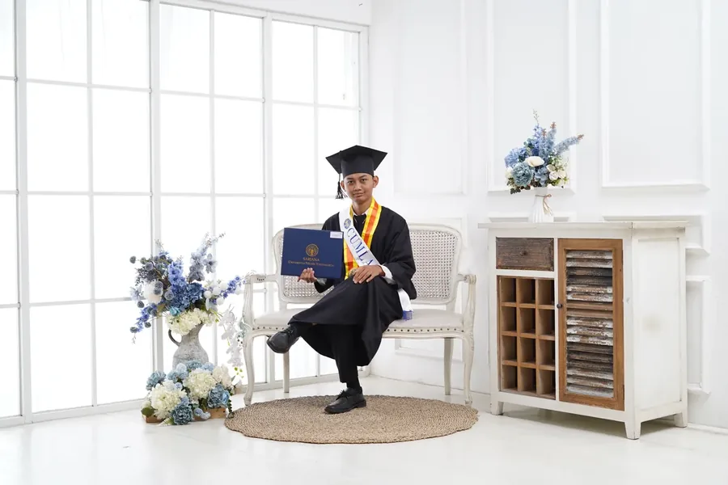
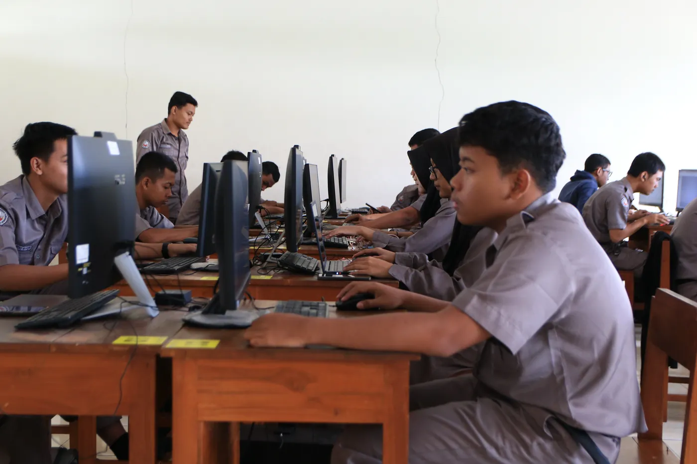
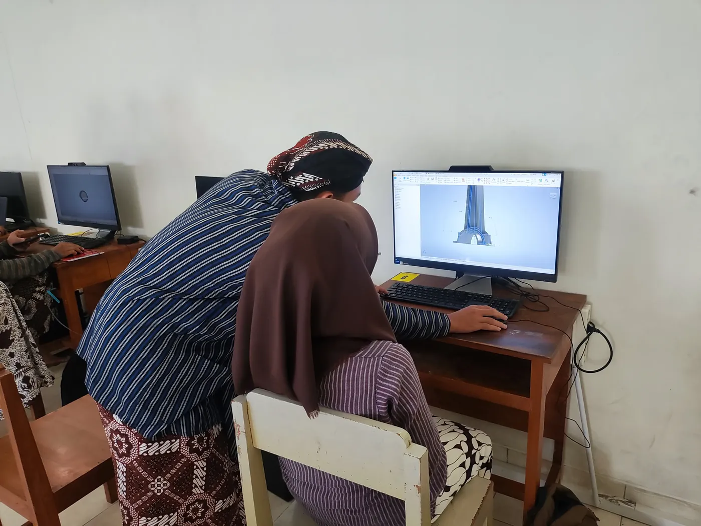
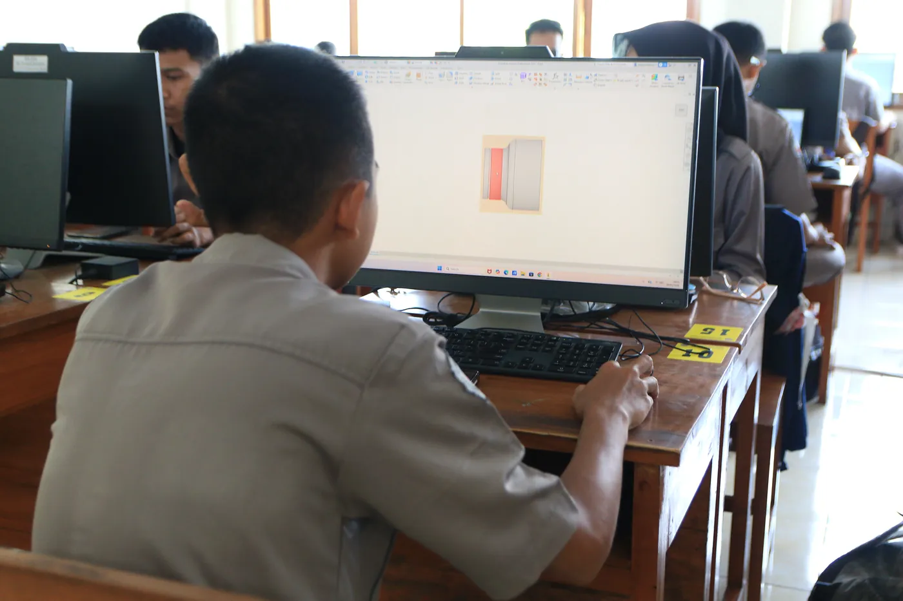
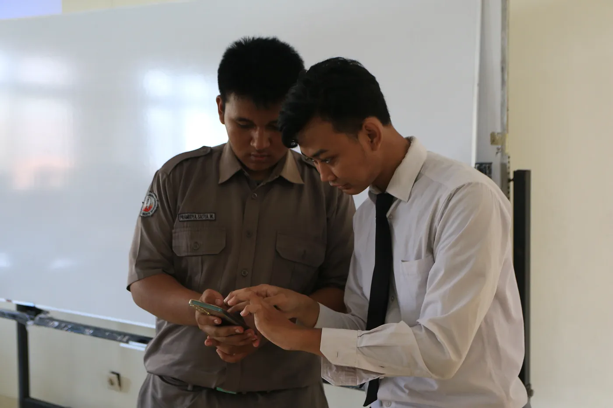

Siklus 1 · Drawing IDW
Hasil Karya Tool Post Assembly
Contoh drawing rakitan Tool Post yang dikerjakan siswa kelas XI Teknik Pemesinan setelah menyelesaikan rangkaian RPP, LKM, dan praktik di laboratorium CAD.
Lihat Karya|
Saya adalah calon guru profesional bidang Teknik Pemesinan yang berkomitmen menghadirkan pengalaman belajar yang bermakna, aplikatif, dan relevan dengan kebutuhan dunia kerja. Melalui pendekatan yang berpusat pada peserta didik, saya berupaya mengembangkan keterampilan teknis, karakter profesional, serta kemampuan memecahkan masalah agar siswa siap bersaing di dunia industri.

Narasi perjalanan hidup dan inspirasi menjadi guru profesional

"Ilmu adalah senjata terkuat di dunia. Ia menerangi jalan di tengah kegelapan, mengubah ketidakmungkinan menjadi peluang, dan membentuk manusia yang berdiri tegak di atas keyakinan dan pengetahuan."
— Fanny Fatchurrahman
Perkenalkan, nama saya Fanny Fatchurrahman. Saya berasal dari Dusun Blaceran, Karanganom, Klaten, Jawa Tengah, sebuah wilayah yang terletak di antara lereng Gunung Merapi dan dataran rendah yang subur. Klaten dikenal sebagai daerah "Seribu Mata Air" dengan tradisi agraris yang kuat, semangat kebersamaan, serta nilai-nilai kedisiplinan yang diwariskan secara turun-temurun. Latar belakang lingkungan yang menjunjung tinggi etos kerja dan penghargaan terhadap ilmu pengetahuan turut membentuk karakter saya sebagai individu yang sistematis, tekun, dan berorientasi pada pemecahan masalah. Nilai-nilai tersebut menjadi fondasi yang mendorong saya untuk menempuh jalur pendidikan dan mengabdikan diri sebagai tenaga pendidik profesional.
Inspirasi saya untuk menjadi seorang guru bermula dari pengalaman menjalani Praktik Pengalaman Lapangan (PPL) pada masa studi S1 di Universitas Negeri Yogyakarta. Melalui kegiatan tersebut, saya berkesempatan untuk terlibat langsung dalam proses pembelajaran di kelas, berinteraksi dengan peserta didik, serta merasakan dinamika yang nyata sebagai pendidik. Pengalaman itu membuka cara pandang saya bahwa profesi guru bukan sekadar menyampaikan materi, melainkan juga membimbing, memotivasi, dan menumbuhkan potensi peserta didik. Sejak saat itu, saya semakin yakin bahwa pendidikan adalah jalan paling bermakna untuk berkontribusi bagi generasi mendatang, dan saya berkomitmen untuk terus mengembangkan diri menjadi pendidik yang profesional dan inspiratif.
Tujuan saya mengikuti program PPG Prajabatan 2026 adalah untuk meningkatkan kompetensi pedagogik, profesional, sosial, dan kepribadian sebagai calon guru di bidang Teknik Pemesinan. Melalui program ini, saya ingin memperdalam pemahaman tentang perencanaan pembelajaran yang efektif, pengelolaan kelas yang kondusif, serta penerapan asesmen yang autentik dan bermakna. Saya berkomitmen untuk menjadi guru yang mampu menghadirkan pengalaman belajar yang aplikatif, relevan dengan kebutuhan dunia industri, serta mampu membentuk karakter peserta didik yang kompeten, adaptif, dan siap bersaing di era global.
Jejak pendidikan formal yang membentuk kompetensi profesional saya
Universitas Sarjanawiyata Tamansiswa
Menempuh program PPG Prajabatan dengan tujuan menjadi pendidik profesional yang mampu menghadirkan pembelajaran bermakna, membentuk karakter peserta didik, dan berkontribusi nyata bagi kemajuan pendidikan kejuruan di Indonesia.
Universitas Negeri Yogyakarta — IPK: 3.74/4.00
Skripsi mengkaji analisis sifat fisis dan mekanik arm brace folding arm spray drone berbahan Aluminium A356 dengan metode centrifugal casting. Aktif sebagai Panitia Mechanical Fair UNY 2021 dan terpilih sebagai Mahasiswa Berprestasi bidang Penalaran.
Jurusan Teknik Fabrikasi Logam & Manufaktur
Pendidikan menengah kejuruan 4 tahun di bidang Teknik Fabrikasi Logam & Manufaktur. Memperoleh keterampilan praktis di bidang fabrikasi logam dan manufaktur. Pengalaman PKL selama 1 tahun di perusahaan manufaktur turut memperkuat pemahaman terhadap standar kerja industri secara langsung. Aktif mengikuti kompetisi keilmuan, antara lain LKS (Lomba Kompetensi Siswa) bidang Metrologi tingkat Provinsi dan Mechanical Fair UGM bidang CAD tingkat Nasional.
Koleksi perangkat pembelajaran, media, dan dokumentasi kegiatan profesional
Modul ajar berbasis Deep Learning untuk kelas XI TPM, materi Assembly Gambar Teknik menggunakan Autodesk Inventor.
Instrumen asesmen diagnostik, formatif, dan sumatif dengan rubrik penilaian autentik berbasis kinerja praktik CAD.
Lembar kerja memandu siswa merakit komponen Base dan Tool Holder (Grounded) dengan self-assessment.
Lembar kerja memandu pemasangan constraint Mate, Flush, dan Insert pada seluruh 8 komponen Tool Post.
Lembar kerja perancangan presentasi file 2D (Drawing), penomoran komponen (Ballooning), dan Bill of Materials (BOM).
Modul bahan ajar lengkap untuk Siklus 1 yang mencakup pengenalan Assembly Tool Post, penerapan Constraint, hingga pembuatan Drawing dan BOM di Autodesk Inventor.
Slide presentasi interaktif Pertemuan 1 yang memvisualisasikan Assembly Tool Post 3D dan konsep constraint Autodesk Inventor.
Slide presentasi interaktif Pertemuan 2 yang memvisualisasikan Assembly Tool Post 3D dan konsep constraint Autodesk Inventor.
Slide presentasi interaktif Pertemuan 3 yang memvisualisasikan Assembly Tool Post 3D dan konsep constraint Autodesk Inventor.
File PDF gambar rakitan Tool Post hasil revisi, digunakan sebagai referensi objek praktik Assembly di Siklus 1.
Modul ajar siklus ke-2 yang dikembangkan berdasarkan hasil refleksi dan umpan balik dari Siklus 1.
Instrumen asesmen siklus ke-2 yang disempurnakan untuk mengukur ketercapaian kompetensi lanjutan.
Modul bahan ajar Siklus 2 untuk memperkaya penguatan konsep dan praktik pembelajaran.
Lembar kerja murid Siklus 2 untuk memandu aktivitas pembelajaran lanjutan secara terstruktur.
Media presentasi inovatif untuk siklus ke-2 dengan pendekatan yang diperkaya dari evaluasi Siklus 1.
File jobsheet Bench Vise sebagai referensi praktik dan pengerjaan tugas pada Siklus 2.
Modul ajar siklus ke-3 sebagai puncak penerapan hasil pembelajaran dan penyempurnaan kompetensi mengajar.
Instrumen asesmen final yang komprehensif untuk mengukur ketuntasan kompetensi siswa di akhir program.
Modul bahan ajar Siklus 3 sebagai penguatan akhir konsep dan praktik pembelajaran setelah refleksi siklus sebelumnya.
Lembar kerja murid Siklus 3 untuk memandu aktivitas pembelajaran puncak secara terstruktur.
Media presentasi puncak untuk siklus ke-3 yang menyempurnakan pendekatan dari Siklus 1 dan 2.
File jobsheet Siklus 3 sebagai referensi praktik dan pengerjaan tugas akhir program.
Cuplikan karya siswa kelas XI Teknik Pemesinan SMK Negeri 2 Klaten sebagai bukti hasil pembelajaran. Identitas siswa ditampilkan menggunakan inisial untuk menjaga privasi.
Contoh drawing rakitan Tool Post yang dikerjakan siswa kelas XI Teknik Pemesinan setelah menyelesaikan rangkaian RPP, LKM, dan praktik di laboratorium CAD.
Lihat KaryaContoh hasil rakitan Bench Vise yang menunjukkan penguasaan constraint, toleransi suaian, dan pembacaan jobsheet pada Siklus 2.
Lihat KaryaContoh karya akhir program penguatan yang mengintegrasikan konsep dari Siklus 1 dan 2 sebagai bukti konsolidasi pembelajaran siswa.
Segera dilampirkanRefleksi terhadap produk pembelajaran yang telah disusun, mencakup kendala, dasar pedagogis, faktor keberhasilan, serta kemungkinan adaptasi pada situasi kelas yang berbeda.
Saat menyusun perangkat pembelajaran dari Siklus 1 sampai 3, kendala paling terasa justru bukan pada teori, melainkan pada pengaturan waktu. Saya butuh ruang untuk menyelaraskan capaian pembelajaran dengan kebutuhan dunia kerja, sementara jam pelajaran di sekolah cukup ketat. Perbedaan kemampuan awal siswa dalam membaca gambar teknik juga membuat saya perlu menyiapkan dua jalur instruksi sekaligus, satu untuk siswa yang sudah cepat menangkap dan satu untuk siswa yang masih mengejar dasar. Di sisi lain, fasilitas praktik seperti lisensi Inventor dan media simulasi assembly tidak selalu siap pakai, jadi saya sering harus menyesuaikan rencana di hari H.
Saya bertumpu pada beberapa pijakan teori yang saling melengkapi. Pendekatan Deep Learning menjadi rangka utama agar siswa tidak hanya menghafal langkah, tetapi memahami alasan di balik setiap perintah CAD. Saya menggabungkannya dengan Project-Based Learning supaya kompetensi praktik benar-benar lahir dari produk nyata, bukan sekadar latihan tertutup. Untuk menampung perbedaan kecepatan belajar, saya memakai Differentiated Instruction, sementara konsep scaffolding Vygotsky saya pakai untuk menjembatani konsep dasar gambar teknik menuju aplikasi pemesinan yang lebih kompleks. Filosofi Among Ki Hadjar Dewantara juga menjaga peran saya tetap sebagai pendamping, bukan pengontrol.
Perangkat saya bisa berjalan karena beberapa hal yang saling menopang. Modul ajar yang kontekstual dengan dunia kerja membuat siswa merasa materi ini relevan untuk masa depan mereka, jobsheet yang jelas memudahkan mereka mengeksekusi tugas tanpa banyak menebak, dan kolaborasi dengan Guru Pamong serta Dosen Pembimbing memberi saya umpan balik cepat saat ada yang perlu diperbaiki. Antusiasme siswa juga meningkat karena tugas dikaitkan langsung dengan praktik industri. Yang tidak kalah penting, asesmen formatif berkala membuat saya bisa mengoreksi arah lebih awal, sebelum kesalahan menumpuk di produk akhir.
Perangkat ini dirancang agar mudah saya adaptasi ke kondisi kelas lain. Tingkat kompleksitas gambar teknik bisa diturunkan untuk kelas yang kemampuan awalnya beragam, dan objek praktik seperti Tool Post atau Bench Vise bisa diganti sesuai sarana yang tersedia di sekolah masing-masing. Durasi serta urutan kegiatan juga bisa saya geser kalau jam pelajaran berbeda dari yang saya pakai di Siklus 1 sampai 3. Bila sekolah punya keterbatasan sarana praktik, strategi asesmen bisa saya alihkan ke berbasis portofolio agar siswa tetap punya bukti kompetensi yang valid tanpa harus bergantung pada satu jenis perangkat lunak tertentu.
Lampiran 7 dan 8: Penilaian penyusunan perangkat dan praktik mengajar
Dokumen penilaian resmi yang memuat evaluasi penyusunan perangkat pembelajaran sebagai bukti capaian perencanaan pembelajaran.
Dokumen penilaian resmi yang merekam evaluasi praktik mengajar, pelaksanaan pembelajaran, refleksi, dan profesionalitas mahasiswa PPG.
Misi, kompetensi, dan karakter guru yang ingin saya bangun
"Menjadi guru profesional berarti terus belajar, berinovasi, dan menginspirasi. Saya berkomitmen untuk hadir sebagai fasilitator pembelajaran yang menghubungkan teori, praktik, dan dunia kerja serta mampu membimbing peserta didik menjadi pribadi yang kompeten secara teknis, kritis dalam berpikir, kolaboratif dalam bekerja, serta bangga dengan jalan profesi yang ditempuhnya."
Merancang pengalaman belajar yang berpusat pada peserta didik melalui pendekatan pembelajaran mendalam (deep learning), diferensiasi, dan asesmen autentik yang relevan dengan kebutuhan dunia kerja.
Menguasai dan terus memperbarui kompetensi teknis di bidang Teknik Pemesinan, mulai dari gambar teknik, CAD/CAM, hingga pengoperasian mesin konvensional dan CNC sesuai standar industri.
Membangun komunikasi dan kolaborasi yang sehat dengan peserta didik, rekan guru, orang tua, serta dunia industri sebagai mitra pembelajaran untuk menciptakan ekosistem belajar yang saling mendukung.
Menjadi teladan integritas, kedisiplinan, dan semangat belajar sepanjang hayat bagi peserta didik, menunjukkan bahwa seorang guru sejati adalah seorang pelajar yang tidak pernah berhenti bertumbuh.
Berbagai keterampilan yang mendukung profesionalisme di bidang pendidikan
Bukti pengembangan diri dan pencapaian profesional
Lembaga Diklat
2026
Lembaga Diklat
2026
BNSP
2025
BNSP
2025
PT Angkasa Pura
2025
Lembaga Pelatihan
2025
Kemenkumham RI
2024
Universitas Negeri Yogyakarta
2023
Shell Indonesia
2022
YPTI Yogyakarta
2021
Dinas Pendidikan Provinsi
2020
Universitas Gadjah Mada
2019
Kumpulan momen bermakna selama proses belajar mengajar
Cuplikan kegiatan mengajar di kelas Teknik Pemesinan SMK Negeri 2 Klaten
Pendampingan kelas Teknik Pemesinan saat praktik Autodesk Inventor

Siswa fokus mengerjakan tugas assembly secara individu

Mendampingi siswa menyusun gambar kerja menggunakan Inventor

Siswa berlatih membuat komponen mekanik di Autodesk Inventor

Diskusi solusi teknis bersama siswa di sela praktik
Jangan ragu untuk menghubungi saya untuk diskusi atau kolaborasi
Saya selalu terbuka untuk berdiskusi tentang pendidikan, berbagi pengalaman, atau berkolaborasi dalam proyek pembelajaran. Silakan hubungi melalui form atau kontak di bawah ini.